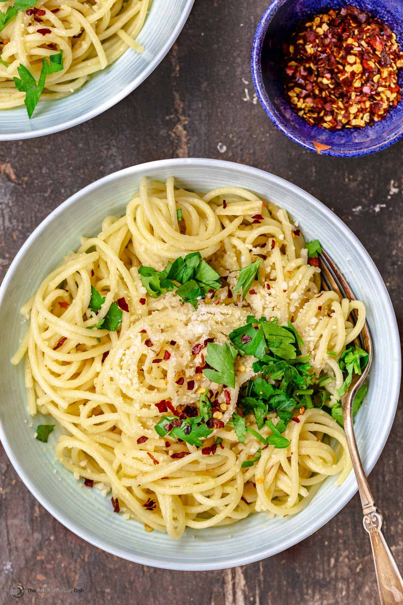

Pasta Aglio e Oglio

Pasta Aglio e Oglio is a simple Italian dish, easy to make on nights you don't feel like cooking!
The ingredients you'll need are:
- Spaghetti
- Garlic
- Lemon
- Parsley
- Olive oil
- Cayenne pepper (optional)
This recipe is very simple!
- Start by putting a pot of highly salted water on boil
- While that comes to a boil, peel and finely mince the garlic
- Add spaghetti to water and cook until a bit before al dente
- Pour about a cup of oil onto a pan, and heat on medium until oil is shimmering
- After, place the garlic onto the pan, fry until garlic is golden brown
- Pour a small bit of pasta water onto pan
- Add pasta to the pan, sturring to infuse pasta with oil and garlic
- Once cooked, take off heat. Add freshly chopped parsley for garnish and cayenne pepper to taste
Congrats! A good tasting, easy meal, all under 30 minutes.